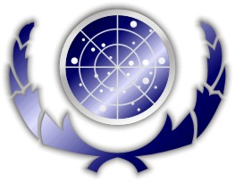
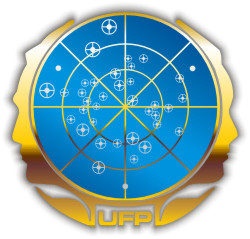

Federazione dei Pianeti Uniti |
|  |
|  |
Anno di costituzione: 2161 (The Outcast, Zero Hour).
Membri fondatori: Umani, Vulcaniani, Tellariti e Andoriani (Zero Hour).
Capitali: Terra; San Francisco, Nord America (capitale legislativa); Parigi, Alleanza Europea (capitale amministrativa) (The Price, Future's End - Part II, Star Trek IV, Star Trek VI).
Estensione: La Federazione comprende almeno 150 sistemi stellari, su un'estensione di oltre 8000 anni luce (First Contact).
Popolazione: Meno di un trilione di esseri (The Last Outpost).
Lingua: Linguacode, noto anche con il nome di Standard; le differenze linguistiche vengono spesso superate attraverso l'uso di sistemi di traduzione computerizzati.
Unità monetaria: Credito (The Trouble With Tribbles). L'accumulo di ricchezze monetarie non è un obiettivo dei cittadini federali.
Governo: Federazione planetaria basata sui principi sanciti nella Costituzione della Federazione dei Pianeti Uniti ratificata nel 2161 (The Drumhead). La Federazione si basa su forti tradizioni democratiche; un Consiglio Federale, eletto dalla popolazione di tutti i membri, ha potere legislativo e il Presidente della Federazione detiene il potere esecutivo. Il Consiglio ha sede a San Francisco (Terra), mentre l'ufficio del Presidente si trova a Parigi (Terra).
Giustizia: I diritti e la libertà dei cittadini federali sono protetti e regolati dalla Suprema Corte della Federazione (Doctor Bashir, I Presume) e da un Codice Uniforme di Giustizia (The Drumhead). Naturalmente, entrano nella giurisprudenza federale anche altri documenti riconosciuti con valore legale, come gli Atti di Cumberland (The Measure of a Man), gli Statuti di Alfa III (Court Martial) e, naturalmente, la Costituzione Federale.
Forza militare: Sezione armata della Flotta Stellare con più di 2500 navi e qualche milione di effettivi (Nor the Battle to the Strong, Call to Arms, Star Trek VI). Il Dipartimento Federale della Difesa ha sede a San Francisco (Terra) all'interno del Comando della Flotta Stellare (Star Trek I).
Festività Federale: Giorno della Federazione, celebrato ogni anno (The
Outcast).